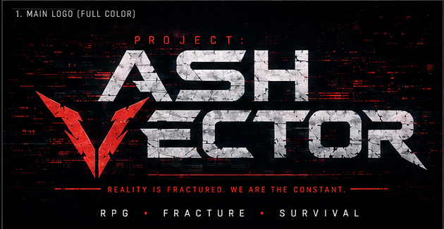
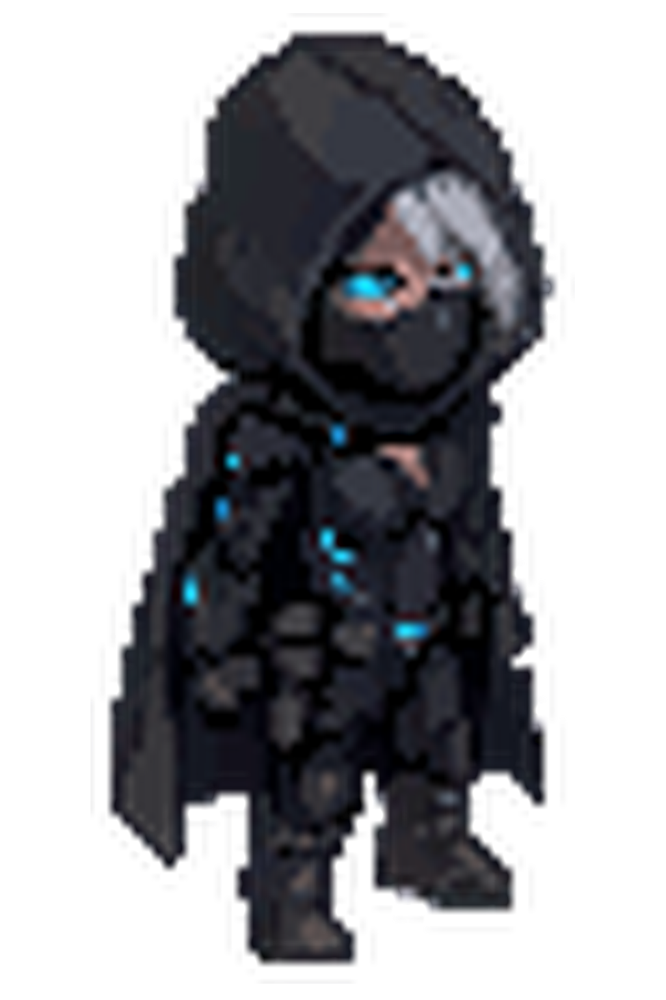
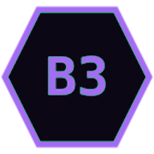
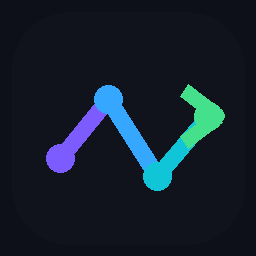
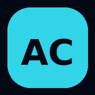
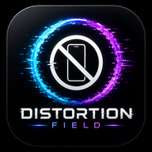
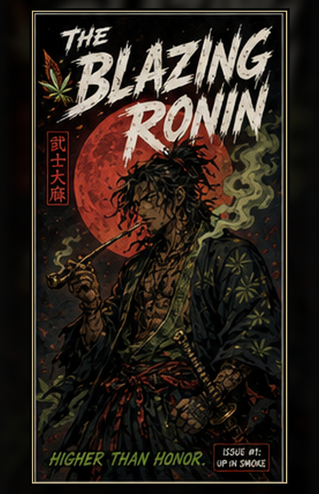

B3
BitByt3s
Android apps, browser games, Linux tools, websites, networking, cybersecurity practice, and product QA.
Explore tech projects ↘Independent creative technology studio · San Francisco Bay Area
I’m Cody Richenberg, founder of EBE INC. This hub brings together BitByt3s tech, Ebmarah music, EBE Designs, and EBE Comics—along with my online résumé, Android apps, browser games, websites, Linux tools, digital products, and 12+ years of audio engineering experience.
The EBE INC network
EBE INC is the umbrella for my technology, music, digital-product, and publishing work. Each division has its own identity, while this site connects the complete portfolio.
Android apps, browser games, Linux tools, websites, networking, cybersecurity practice, and product QA.
Explore tech projects ↘More than 12 years of production, audio engineering, mixing, mastering, sound design, and independent releases.
Open music catalog ↗Practical digital downloads, editable tools, storefront design, and resources made to reduce everyday busywork.
Visit the store ↗Original comic universes, digital issue packaging, mobile reading, release metadata, and direct Android distribution.
Download reader APK ↓EBE INC project hub
Browse work across the EBE INC network, including apps, games, storefronts, artist platforms, Linux tools, digital publishing, and practical prototypes.


01 / FEATUREDA responsive sci-fi dungeon crawler with exploration, turn-based battles, progression systems, story content, and a built-in playtest environment.

PORTFOLIO APPA standalone Android edition of this technical résumé and project portfolio, designed to be shared directly with recruiters, collaborators, and clients.
Technical focus: Bundled offline portfolio content, responsive WebView presentation, external-link handling, unique package identity, custom signing, and branded Android packaging.

MUSIC WORKFLOWA privacy-first promotion workspace that organizes releases, campaign planning, creative assets, approvals, scheduling, publishing, and performance review.
Technical focus: Tkinter desktop UI, SQLite persistence, SoundCloud connection flow, local credential handling, first-use tour, and Zorin update tooling.

REMOTE STATUSCONNECTEDA phone companion for a desktop content-automation system, designed to monitor jobs, inspect performance, receive alerts, and issue protected remote controls.
Technical focus: Device pairing, background monitoring, calendar and stats views, protected controls, and verified in-place APK updates using SHA-256, package identity, and signing checks.
A no-key-required travel utility that surfaces nearby beaches, food, and gas with location-aware sorting, weather context, and navigation choices.
Technical focus: Bundled reliable listings, geolocation, Open-Meteo/NOAA weather, Google Maps/Waze intents, distance calculations, and offline-friendly fallback content.

A digital-wellbeing experiment that asks users to declare why they are opening an app, set a time budget, and compare intention with actual behavior.
Technical focus: Usage Access integration, on-device session logging, intent prompts, budget overruns, privacy-first data handling, and a behavioral score dashboard.

A branded Android foundation for distributing and reading original comic releases, starting with The Blazing Ronin.
Technical focus: Native application packaging, high-resolution page delivery, issue navigation, app branding, and a catalog structure designed for future series.
A full responsive redesign that organizes brand story, product discovery, long-form content, retailer search, and wholesale information into clear dedicated pages.
Practical downloads.
Less busywork.
A focused storefront for practical digital downloads designed to save time and reduce everyday busywork through clear, editable resources.
Technical focus: Responsive storefront structure, product categories, conversion-focused copy, custom-domain delivery, policy pages, and a secure Fourthwall checkout handoff.
A multi-page artist platform combining music, sample packs, live content, biography, an interactive virtual room, and game links inside one visual identity.
Technical focus: Responsive navigation, custom media behavior, page-specific audio, branded interactions, performance tuning, and GitHub-based deployment.
Only finished Android APKs, including the standalone BitByt3s Profile app, are offered as downloads. Source code and source packages are not distributed from this portfolio. Android may require permission to install apps from your browser or file manager.
What EBE INC does
EBE INC combines product thinking, technical experimentation, media production, and hands-on testing to turn ideas into usable releases.
Responsive multi-page sites, digital storefronts, interactive interfaces, local-first tools, branded experiences, deployment, and mobile cleanup.
Native and hybrid Android builds focused on clear utility, device integration, dependable packaging, and update continuity.
Linux-friendly utilities with persistent data, guided workflows, local services, and packaging for non-technical users.
Hands-on testing across screen sizes and devices, tracking problems from screenshots, and turning feedback into focused update builds.
More than 12 years creating and finishing music, with hands-on experience across production, recording workflows, sound design, mixing, mastering, and artist release operations.
Audio engineering
My technical work is backed by a long creative-production career. As Ebmarah, I have spent more than twelve years producing electronic music and working through the complete audio chain—from arrangement and sound design to detailed mixing and final mastering.
Composition, arrangement, synthesis, sampling, bass design, editing, and release-ready session organization.
Gain staging, routing, corrective processing, dynamics, spatial effects, automation, and critical listening.
Balancing dense electronic productions, improving clarity and impact, and preparing finished masters for digital release.
Building artist websites, release tools, promotional workflows, and interactive media informed by real music-industry needs.
Ebmarah catalog
Browse original tracks, remixes, bootlegs, collaborations, and bass-music releases through the dedicated catalog page.
Founder & company
EBE INC is my independent creative technology company and central hub. I’m Cody Richenberg, a Menlo Park–based developer, cybersecurity-focused IT professional, audio engineer, and product builder working across BitByt3s, Ebmarah, EBE Designs, and EBE Comics.
I use Zorin OS as my main development environment and care about the last mile: clear setup instructions, dependable launchers, readable interfaces, update paths, packaging, and fixes based on real testing—not just a successful first build.
The same hub also serves as my online résumé. I am currently studying C++ at Cañada College while developing practical skills through a Linux home lab, Android and web projects, remote networking, product QA, storefront operations, publishing workflows, and more than 12 years of audio production.
Clarify what the user needs, what “working” means, and which platform constraints matter.
Create the smallest complete version, then connect the core interface and data flow.
Run it on the intended devices, reproduce failures, and remove friction from the main path.
Package a usable release with launch instructions, version continuity, and clear next steps.
Work with EBE INC
I’m open to technology roles, product support, QA, web and Android projects, creative collaboration, audio work, and opportunities where a broad hands-on portfolio is valuable.